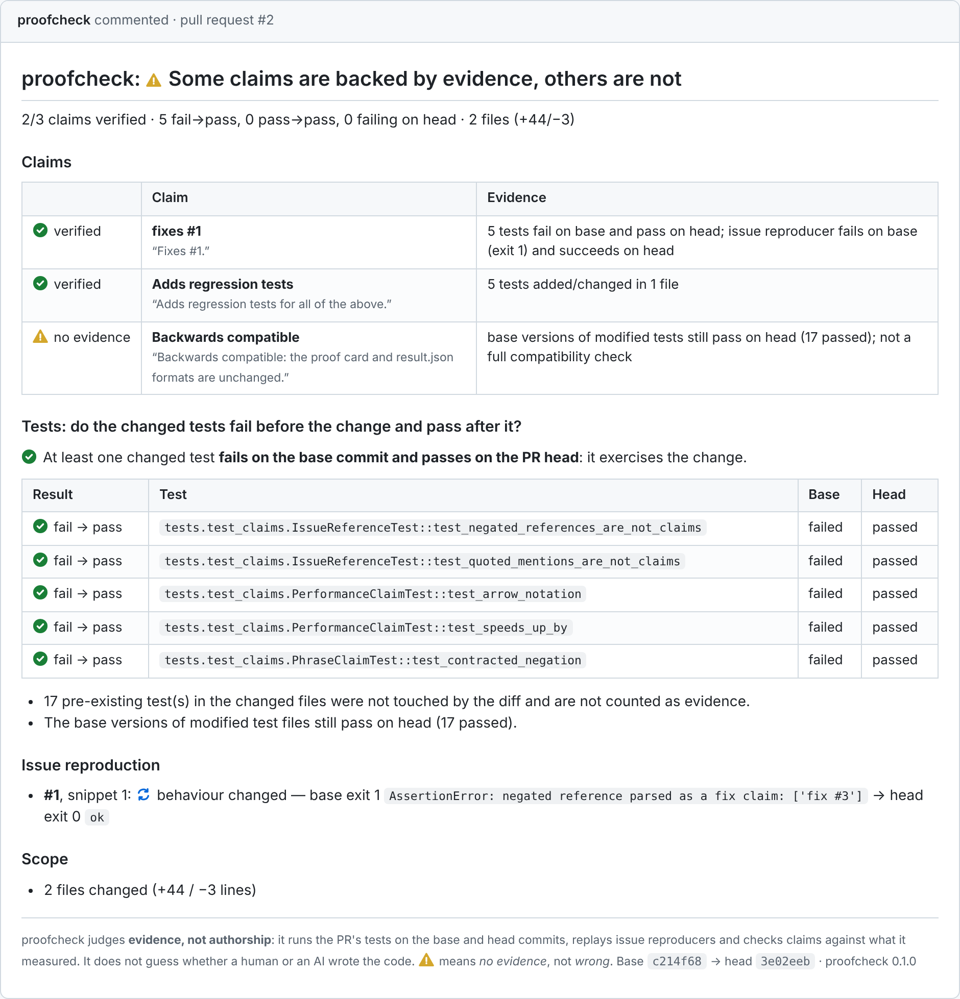

Evidence, not authorship.
proofcheck checks whether a pull request does what it claims. It runs the PR's tests before and after the change, replays the linked issue's reproducer, and matches every claim in the description to what it measured. It never guesses who, or what, wrote the code.
Version 1.0.0, MIT licensed. Python first; the agent is experimental.
| Evidence | Base | Head |
|---|---|---|
test_repeated_whitespacechanged by the PR |
failed | passed |
issue #12 snippetfrom the linked issue |
exit 1 | exit 0 |
test_three_wordschanged by the PR |
passed | passed |
One comment that shows its work
Every claim gets a verdict and the evidence behind it. ⚠️ means no evidence, not wrong: often the fix is just a test that fails before the change. The comment is updated in place and the PR gets a label: verified, partial, contradicted or no evidence.


A real card: proofcheck 0.2 run on one of its own pull requests. It also caught a bug in proofcheck: quoted example phrases were being counted as claims.
Claims on one side, measured evidence on the other
proofcheck checks out the base and the head of the PR as separate git worktrees and gathers evidence from up to four sources. Fixed rules, not a model, decide each verdict.
Changed tests on base and head
The PR's new tests run against the old code and the new code. A test that fails before and passes after exercises the change; one that passes on both doesn't, however plausible it looks.
Issue reproducer replay
Python snippets and >>> sessions from the linked issue run on both commits, with a timeout and a scrubbed environment. proofcheck records whether the behaviour changed.
Diff evidence map
Each changed hunk is undone in turn and the evidence rerun. Hunks the tests depend on are required; hunks nothing depends on get a scope note, which is a good way to spot unrelated changes.
Agent reproduction test opt-in
When “fixes #N” still has no evidence, an LLM can write a candidate test. proofcheck runs it on base and head itself and keeps it only if it fails, then passes.
Built for pull requests from strangers
Running PR code is the dangerous part. proofcheck splits the work into three trust zones that only pass artifacts to each other, so no job both runs PR code and holds a secret or a write token.
- Evidence job. Runs on
pull_requestwith a read-only token, no secrets,persist-credentials: false, timeouts, and config read from the base commit. - Agent jobs. The job with the LLM key reads files as data through git and never runs them. Candidate tests run in a separate job, on a separate VM, with no secrets.
- Comment job. Never checks out PR code. It validates the artifact, checks the head SHA, re-renders the card from JSON and escapes all PR text.
- Not a sandbox. A malicious PR can still tamper with its own evidence inside the unprivileged job. proofcheck raises the cost of low-effort PRs; it doesn't stop a determined attacker.
- Never
pull_request_targetwith a PR checkout. That pattern runs attacker code with a write token and your secrets. - Read the full threat model in SECURITY_MODEL.md.
An agent that writes the missing test, and admits when it can't
Many PRs say “Fixes #123” with no test. The experimental agent tries to write one. It is off by default, and its tests can only ever add evidence: they never mark a PR as wrong.
~1 in 3
issues get a working fail-to-pass test in published research on this approach (Otter / Otter++, arXiv:2502.05368: about 31–37 %). We haven't benchmarked proofcheck's agent, so expect it to come back empty-handed often. Each card records the model, variants tried, tokens and cost.
- Read-only tools.
read_file,grep,get_diff,list_testsand friends, all via git. No write, exec or network tools. - Different prompts, not more samples.
reproduce-issue,exercise-diffandmimic-existing-testseach take a different angle. - Keep what works. A winning test appears on the card, ready to commit, so the evidence outlives the bot.
Set it up in three steps
proofcheck init writes small caller workflows that point at reusable workflows in the proofcheck repository.
-
Install
pip install proofcheck # once 1.0.0 is on PyPI pip install "git+https://github.com/bhaskargurram-ai/proofcheck@v1.0.0" -
Generate the workflows
From your repository root. It detects pytest, Jest or unittest, writes the workflows and a commented
proofcheck.toml, and won't overwrite files without--force.proofcheck init # add --agent for the experimental agent.github/workflows/proofcheck.yml: gather evidencename: proofcheck on: pull_request: types: [opened, synchronize, reopened, edited] permissions: contents: read issues: read # read linked issues on private repositories (read-only) concurrency: group: proofcheck-${{ github.event.pull_request.number }} cancel-in-progress: true jobs: evidence: uses: bhaskargurram-ai/proofcheck/.github/workflows/evidence.yml@v1.0.0 with: proofcheck-ref: v1.0.0 python-version: "3.12" install-command: 'pip install -e ".[dev]" pytest || pip install pytest' fail-on: never # or "contradicted" / "no-evidence" to fail the check.github/workflows/proofcheck-comment.yml: post the cardname: proofcheck comment on: workflow_run: workflows: ["proofcheck"] # must match the `name:` of proofcheck.yml types: [completed] permissions: {} jobs: comment: if: github.event.workflow_run.event == 'pull_request' && github.event.workflow_run.conclusion != 'cancelled' permissions: contents: read actions: read # download the artifact of the triggering run pull-requests: write # upsert the comment and the verdict label uses: bhaskargurram-ai/proofcheck/.github/workflows/comment.yml@v1.0.0 with: proofcheck-ref: v1.0.0 labels: true.github/workflows/proofcheck-agent.yml: optional agentname: proofcheck agent on: workflow_run: workflows: ["proofcheck"] # must match the `name:` of proofcheck.yml types: [completed] permissions: {} jobs: agent: if: github.event.workflow_run.event == 'pull_request' && github.event.workflow_run.conclusion != 'cancelled' permissions: contents: read actions: read pull-requests: read issues: read uses: bhaskargurram-ai/proofcheck/.github/workflows/agent.yml@v1.0.0 with: proofcheck-ref: v1.0.0 llm-provider: ${{ vars.PROOFCHECK_LLM_PROVIDER }} llm-model: ${{ vars.PROOFCHECK_LLM_MODEL }} llm-base-url: ${{ vars.PROOFCHECK_LLM_BASE_URL }} python-version: "3.12" install-command: 'pip install -e ".[dev]" pytest || pip install pytest' run-for: trusted # or "everyone" (spends API credits on any fork PR) secrets: llm-api-key: ${{ secrets.PROOFCHECK_LLM_API_KEY }} comment: needs: agent if: needs.agent.outputs.verified == 'true' permissions: contents: read actions: read pull-requests: write uses: bhaskargurram-ai/proofcheck/.github/workflows/comment.yml@v1.0.0 with: proofcheck-ref: v1.0.0 pr-number: ${{ needs.agent.outputs.pr-number }} artifact-run-id: ${{ github.run_id }} labels: true -
Open a pull request
The card appears in the run's job summary right away, and as a PR comment with a label once the comment workflow runs. For the agent, add a
PROOFCHECK_LLM_API_KEYsecret andPROOFCHECK_LLM_PROVIDERandPROOFCHECK_LLM_MODELvariables first.